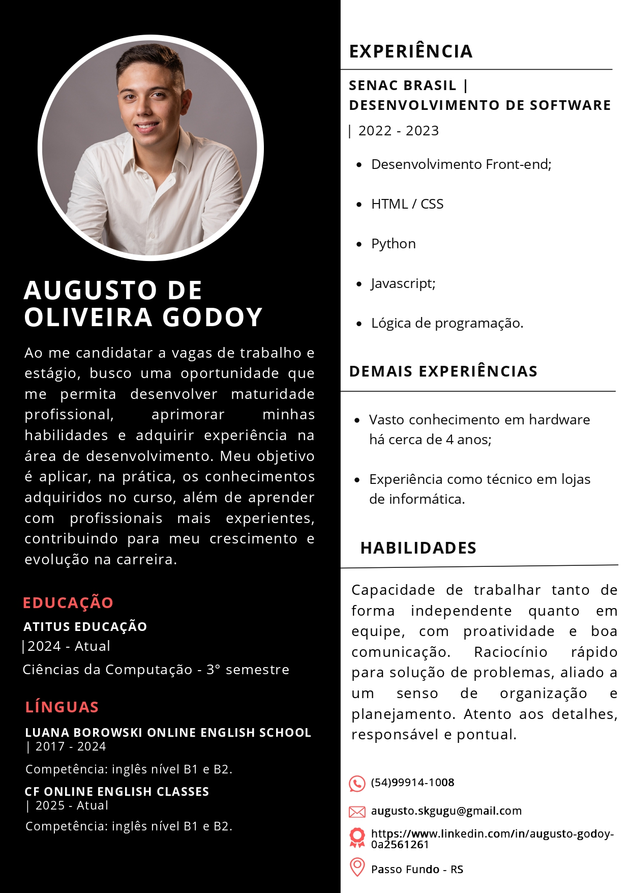

Olá!
Meu nome é Augusto Godoy
Desenvolvedor júnior e entusiasta da tecnologia!
HTML • CSS • Python
Tenho 19 anos, atualmente cursando Ciência da Computação na Atitus Educação, estou no 3º semestre, com previsão de conclusão em 2027.
Tenho mais de 5 anos de experiência com hardware e suporte técnico. Atualmente sou estagiário em desenvolvimento de software na Rede de Farmácias São João.
Estou em busca constante de aprendizado e aprimoramento profissional, sempre buscando aplicar na prática o que aprendo.

Sobre
Onde eu trabalho?
Atualmente trabalho como estagiário em desenvolvimento na Rede de Farmácias São João.
Também sou fundador da microempresa Guto PC, oferecendo serviços especializados em hardware e suporte técnico.
Conhecimentos:
- HTML / CSS
- Python
- Lógica de programação
- Montagem e manutenção de computadores
- Inglês nível B1/B2